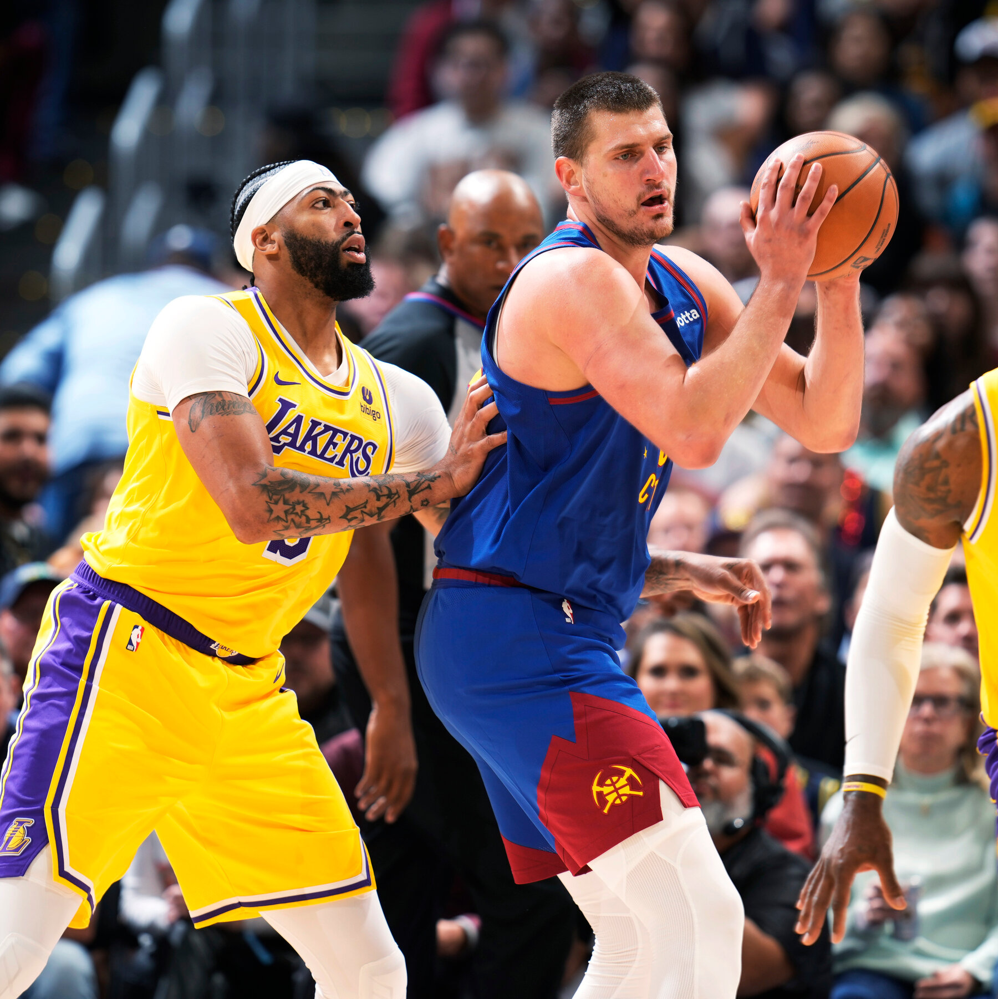
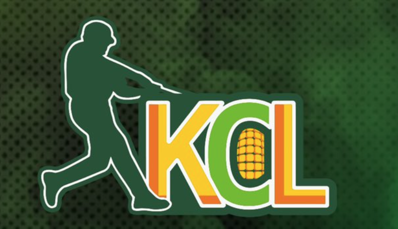

I created an interactive NBA dashboard in PowerBI, inspired by the Basketball Reference website, to showcase my data visualization and analytical skills. The dashboard consists of three tabs: the Franchise tab, which provides historical franchise information and team leaders; the Seasons tab, summarizing key details from each NBA season such as champions, award winners, all-stars, and standings; and the Players tab, highlighting player stats and career accolades.
This project demonstrates my proficiency in PowerBI, including dashboard design, data modeling, Power Query, and DAX calculations.
Additionally, it highlights my ability to handle complex data and create meaningful relationships between datasets to deliver insightful analysis.


In this project, I developed a sophisticated predictive model for NBA game outcomes utilizing probabilistic simulations. By scraping comprehensive NBA player and team data from the 2023-2024 season via Basketball Reference, I constructed a robust framework capable of forecasting the winner across 1,000 simulated matchups of any selected teams.
The model meticulously simulates the point production of both the starting five and the top eight role players from each team. Key factors influencing these predictions include individual shooting performance, playing time data, and team defensive ratings. This multifaceted approach ensures a nuanced and accurate projection of game results.

This project aims to accurately predict the final prices of residential homes in Ames. Utilizing R, nine sophisticated statistical learning methods are employed to enhance the precision of our predictions, demonstrating a deep understanding of predictive analytics and data-driven decision-making.
This project explores profitable sports betting strategies in the NFL using data-driven approaches. It investigates both season win totals and week-to-week betting, employing machine learning, regression strategies, and statistical tests to achieve accurate predictions. Tools like Excel, R, and ChatGPT are utilized to enhance the algorithm's effectiveness compared to emotional and random betting.

This project leverages an extensive NBA play-by-play dataset to perform a variety of analyses. The data includes detailed game events, player actions, and team statistics. Using SQL, I combined multiple queries to gain insights into different aspects of team and player performance from the 2023-24 season.

This repository showcases my comprehensive Tableau Dashboards, highlighting my proficiency in data visualization and analytics.

Here is an example of a weekly article I wrote last summer for the KCL Baseball League, recapping the season's highlights. I utilized SQL to pull and manipulate the data, providing in-depth analysis and insights.
This project involves a comprehensive data analysis of NCAA March Madness teams, using data scraped from barttorvik.com. The dataset includes regular season statistics, rankings, and game logs for all participating teams from 2008 to 2024. The aim is to identify which team stats most strongly correlate with success in the tournament. Additionally, the project features historical AP Poll rankings dating back to 1985, providing valuable insights into the evolution of team performance over the years. This analysis helps in understanding the factors contributing to winning teams and offers a rich historical perspective on college basketball rankings.